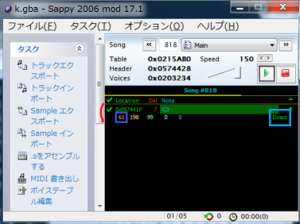
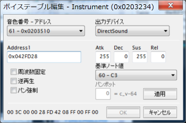

GBAは、waveを再生することが出来ます。
step_01
別ゲームから持ってくるなり、
そういうデータを探すなり、
自分で作るなりして
楽譜が1つしかないデータを作ります。
(利用している楽器がDirectSoundである必要があります)

{kind=link}
赤枠が楽譜の個数です。 このデータには、1つしか楽譜がありません。
水色が楽器の種類です。「Direct」と表示されているので、DirectSoundだということがわかります。
紫色が楽器番号です。
step_02
しゃべらせるwaveデータを用意します。
あまりに長いと容量を圧迫するので、注意してください。
step_03
waveの音質を変更します。
wavの音質は、sappyではどれでも綺麗に聞こえますが、
FEゲーム中に聞くと、 11khz か 12khz ぐらいじゃないとおかしな音声として聞こえました。
| 8bit mono 11khz | →ok |
| 8bit mono 12khz | →ok |
| 8bit mono 22khz | →NG |
| 16bit mono 12khz | →ok |
| 16bit mono 8khz | →NG |
| 16bit mono 48khz | →NG |
8bitと16bitはどちらでもいいみたいです。
8bit mono 12khzぐらいが現実的な落とし所でしょうか。
EcoDecoToolとかで、上記のwavに変換してください。
https://osdn.jp/projects/ecodecotool/
step_04
{kind=link}
{kind=link}
step_05
sappyのボイステーブルの編集から、

楽器番号の楽器を選択します。
DirectSound楽器が出てくると思いますので、
そのアドレスを、
先ほどwaveを追加したアドレスに書き換えます。

{kind=link}
step_06
sappyで再生してみると、先ほど追加したwaveが聞こえるはずです。
sappyで聞こえない場合は、どこか失敗しています。
または、データの音量が小さすぎることが有ります。
step_07
ゲーム中でその音をなんとかして再生してください。
音(SE)も音楽なので、再生する方法はいろいろあります。
サウンドルームに入れるなり、イベントでこの音に変更するなり、いろいろやってください。
sappyでなっているのに、ゲーム中でならない場合は、
step_03で周波数変換を間違えている可能性があります。